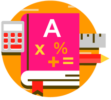

Preescolar (Edades 2 - 4) Nuestro programa preescolar se enseña completamente en inglés y está diseñado para preparar al estudiante para la escuela primaria. Este programa está estructurado para proporcionar una base en la comunicación en inglés, una introducción a los personajes bíblicos básicos y una oportunidad para interactuar de manera significativa con otros niños. Los estudiantes reciben el apoyo necesario para desarrollar sus habilidades sociales básicas, así como sus habilidades motoras.
Primaria (Grados K – 4to) Nuestra escuela primaria ofrece un programa académico basado en los estándares de los Estados Unidos (EngageNY Common Core). Los estudiantes de 1º a 6º grado reciben la mayor parte de su instrucción académica en inglés, con la excepción de las clases de español y sociales. Dado que la mayoría de nuestros estudiantes son estudiantes del idioma inglés (ELL) no estadounidenses, se han realizado muchas adaptaciones a nuestro plan de estudios para satisfacer las necesidades de aprendizaje de nuestros estudiantes.
Escuela intermedia (grados 5º a 8º) Nuestro programa de escuela intermedia está diseñado para ayudar a los estudiantes a hacer la transición de la escuela primaria a la escuela secundaria. Por primera vez, los estudiantes rotan entre profesores de asignaturas especializadas. Nuestro objetivo es desarrollar su independencia y animarles a que empiecen a asumir la responsabilidad de su propio trabajo.
Escuela secundaria (grados 9º a 12º) Nuestro programa de escuela secundaria está diseñado para preparar a los graduados para estudios posteriores. En este nivel, los estudiantes recibirán una educación verdaderamente bilingüe y se espera que progresen regularmente hacia la admisión a la universidad dominicana o estadounidense. Es responsabilidad de los estudiantes mantener el promedio de calificaciones (GPA) establecido y el registro de conducta.